Export¶
Export options are available in the File toolbar drop down list,

Export into Image files
VCollab Pro exports current scene into the following image formats,
JPG (*.jpg),
BMP (*.bmp),
PNG (*.png),
TIF (*.tif).
Procedure:
Click ‘Export Image’ option.
Enter a new image file name.
Select Save As type format.
Click Save.
Exporting Cropped Image
‘Export Image Region’ allows user to select a portion of scene to be exported as image. User can resize the highlighted viewer portion using mouse.
Procedure:
Click ‘Export Image Region’ option.
A window overlay will be appeared in viewer.
User can resize and move the window.
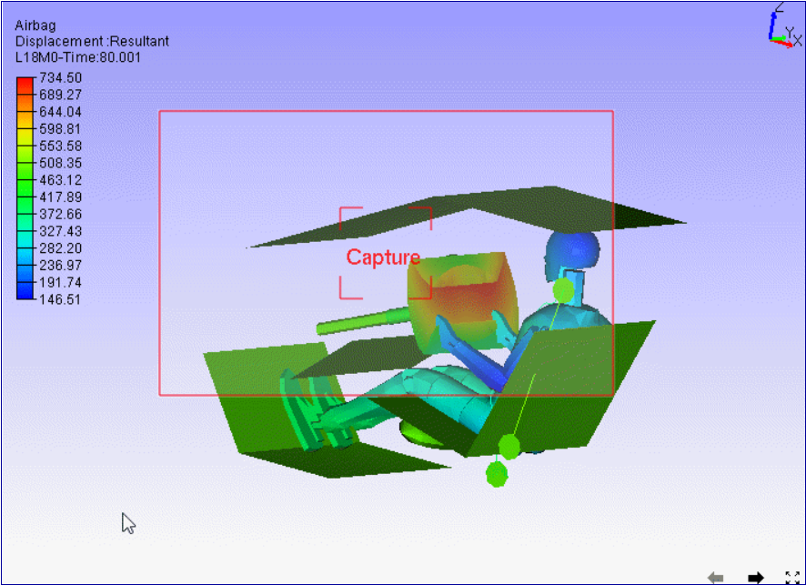
Click ‘Capture’ option in center of overlay after setting up the region.
It pops up file browser dialog.
Provide file name.
Click ‘Save’
Export Viewpoints
VCollab Pro exports CAX viewpoints data into following format files,
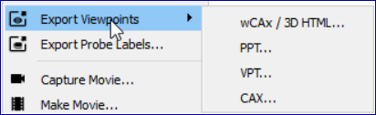
wCAX / 3D HTML, a VCollab format for web viewer.
This option exports geometry with current scalar result and user selected viewpoints data into a wCAX file format. wCAX is a compressed and filtered data based on part and result existence in viewpoints.
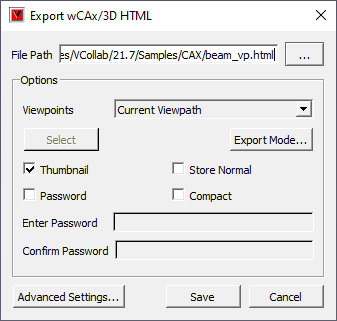
File Path
Output wCAX/3D HTML file path
Viewpoints
Allows user to select following viewpoint export options,
All Viewpaths
Current Viewpath
Current Viewpoint
Current Display.
Selected Elements
Select
This option is enabled only for selected elements option. Allows user to define a rectanglein the viewer.
Set Export Mode
This option is enabled only for Current Viewpath option. Allows user to set export mode 2D / 3D for each viewpoint.
Thumbnail
Stores thumbnail image for each viewpoint.
Store Normal
Exports vertex normals into WCAX file. It may increase the file size.
Password
Enables password setup to WCAX file.
Compact
Filters out duplicate data before exporting. This may take more time but will result in reduced file size.
Advanced Settings
This function pops up web viewer options dialog. It contains generic and premium feature On/Off functions. Based on that features enabled here, web viewer will diplay relevant interfaces.
Save
Saves wCAX / 3D HTML file
Web Viewer Options
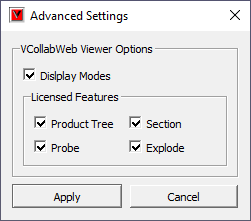
Product Tree
If this option is checked, Product tree interface will be displayed in web viewer, otherwise not.
Probe
If this option is checked, Probe interface will be displayed in web viewer, otherwise not.
Section
If this option is checked, Section interface will be displayed in web viewer, otherwise not.
Explode
If this option is checked, Explode interface will be displayed in web viewer, otherwise not.
DisplayModes
If this option is checked, Display Modes interface will be displayed in web viewer, otherwise not.
Apply
Sets these options to be carried out.
Selected Elements
This option allows user to select a region in the screen and clip the elements outside the region. User can further clip model by moving front and back planes. Now the bounded elements with current orientation can be exported into wCAX / 3D HTML file.
Note:
Deletion of results will affect existing viewpoints. These affected viewpoints will be ignored while writing into WCAx/HTML.
Animation state will be ignored in case of Current Display option.
Some internet browsers may not support TIFF image format. VCollab recommends png,jpeg and gif formats for background if required.
In “WebViewer Settings” dialog, Premium features Product Tree, Probe, Section and Explode options will be disabled as below, if corresponding licenses are not available.
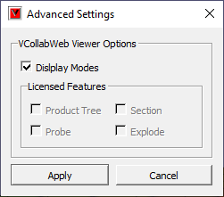
Export Mode
3D - exports 3D data from the viewpoint selected.
2D - exports 2D image data from current viewpoint display
Skip - skips this viewpoint in export function.
PPT, Microsoft PowerPoint file.
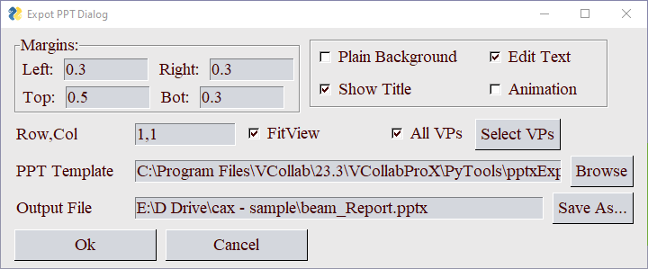
Left, Right, Top, Bot |
Left, Right, Top and Bottom margins to be set in PPT slide. |
Plain Banckground |
A flag, used to change the background to plain before capturing the image. |
Edit Text |
Labels copied to PPT can be editable if the flag is checked. |
Show Title |
A flag, used to set title visibility in the PPT slide. |
Animation |
A flag, used to capture the animation as gif or a static image. |
PPT Template |
Powerpoint template (*.pot) file path as an optional use. |
Output File |
Output PPTx file path. |
OK |
Creates PPTx file with the above attributes. |
Cancel |
Cancels the process. |
It exports all viewpoints as images into Microsoft PowerPoint file, with viewpoint title. User can control the position and size of image.
VPT, a viewpoint file (*.vpt).
It exports all view paths/viewpoints into a single VPT file. This VPT file can be merged with appropriate CAX files later.
Export Probe Labels
VCollab Pro exports all CAE Probe labels generated by using Probe and Hotspot finder modules into Comma Separated .csv files.
For example, result information saved in csv format as follows,
Model,Part,NodeID,ElementID,Xpos,Ypos,Zpos,Instance,Result,Value
Bracket2,Object 1,179,,0.95839,1.32199,6.99499,L1M1,Reaction
Force:Translational Magnitude,71.5747
Capture Movie
This function allows user to record user interactions whenever required and output them into a movie file.
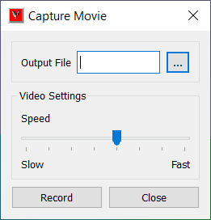
Output File
Output movie file name path.
Speed
Controls the speed of the movie.
Record/Stop
Starts / Stops recording actions
Close
Closes the window.
Make Movie
This additional feature stitches a set of external images into animated movie file.
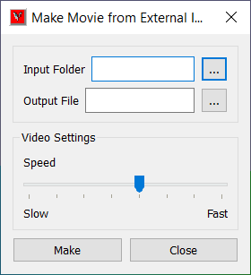
Input Folder
Input path for the folder that contains set of images.
Output File
Output path and file name.
Speed
Controls the speed of the movie.
Make
Creates the movie.
Close
Closes the window.
Note: Before making movie, user is advised to make sure that the following constraints are met.
All images in the folder should be of same format.
The image folder should contain images for one dataset.
Filenames of images should have combined with two texts,
One is common name for all images.
The other part should be of numerical index.
This unique numerical index plays the role of sorting the frames in a proper order.
This index part should be either first part or the last part of the file name.
How to export selected elements?
Click ‘File | Export’
Select ‘wCAx / 3D HTML’ option.
It pops up ‘Export wCAx / 3D HTML’ dialog.
Provide output wcax or html file path using file browser dialog or enter the file path.
Click ‘Selected Elements’ in the drop down list.
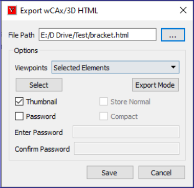
It enables ‘Select’ button which helps to define rectangular region in viewer.
Click ‘Select’ button.
Define a rectangular region of interest in viewer using mouse left button drag.
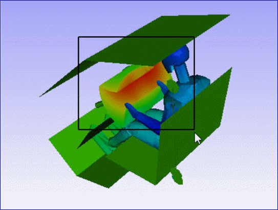
Elements outside region will be clipped by the frustum (rectangle).
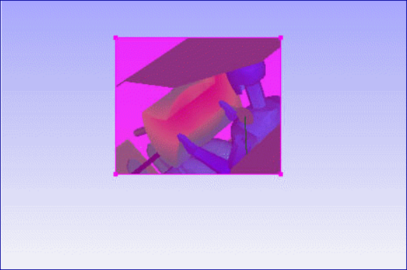
Orient the model to visualize the depth of frustum.
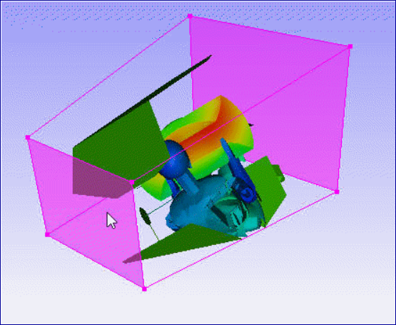
User can move front and back planes by clicking on them and dragging with mouse left button.
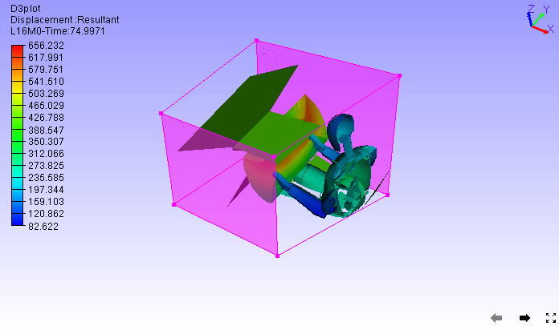
Enable ‘Thumbnail’ opiotn to capture the region selection as thumbnail image.
Click ‘Save’ button.
A message ‘File Saved’ will pop up, if succeeded.